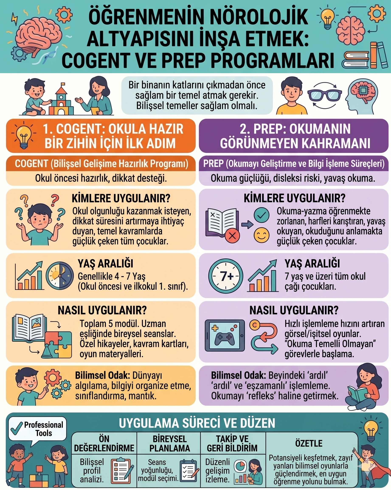

Bilişsel destek

Kısa yanıt: COGENT ve PREP, J. P. Das ve çalışma arkadaşlarının geliştirdiği, PASS bilişsel işlemleme yaklaşımından yararlanan yapılandırılmış eğitim programlarıdır. COGENT, ağırlıklı olarak erken çocukluk döneminde bilişsel işlemleme, dil, fonolojik farkındalık ve erken okuryazarlık becerilerini desteklemeyi; PREP ise okuma güçlüğü yaşayan okul çağı çocuklarında özellikle eşzamanlı ve ardıl işlemleme stratejilerini okuma görevlerine aktarmayı amaçlar. Bu programlar tanı testi, “zekâ artırma” yöntemi veya her çocukta başarıyı garanti eden uygulamalar değildir. Uygunlukları değerlendirme sonucunda belirlenmeli ve gerektiğinde doğrudan, kanıta dayalı okuma öğretimiyle birlikte planlanmalıdır.
Başlıktaki “nörolojik altyapı” ne anlama geliyor?
“Öğrenmenin nörolojik altyapısını inşa etmek” dikkat çekici fakat kolayca yanlış anlaşılabilecek bir ifadedir. COGENT veya PREP’in beynin belirli bir bölgesini doğrudan “inşa ettiği”, nörolojik bir bozukluğu tedavi ettiği ya da beyin görüntüleme bulgularıyla kanıtlanmış kalıcı değişiklikler oluşturduğu söylenemez.
Buradaki ifade bir benzetme olarak kullanılmalıdır: Çocuk, yapılandırılmış görevler sırasında dikkatini yöneltme, bilgiyi sıraya koyma, parçaları bir bütün hâlinde görme, plan yapma, stratejisini açıklama ve gerektiğinde değiştirme gibi bilişsel işlemleri tekrar tekrar kullanır. Bilimsel olarak daha doğru ifade, bu programların belirli bilişsel işlemleme stratejilerini ve bunların akademik görevlere aktarımını desteklemeyi amaçladığıdır.
PASS bilişsel işlemleme kuramı nedir?
PASS adı dört bilişsel işlemden oluşur: Planning, Attention, Simultaneous ve Successive processing; Türkçede planlama, dikkat, eşzamanlı işlemleme ve ardıl işlemleme olarak açıklanabilir.
| PASS süreci | Ne anlama gelir? | Günlük/akademik örnek |
|---|---|---|
| Planlama | Bir hedef için strateji seçme, uygulamayı izleme ve gerektiğinde değiştirme | Bilinmeyen bir sözcüğü okumak için yönteme karar verme |
| Dikkat | İlgili bilgiye odaklanma ve dikkat dağıtıcılara rağmen görevi sürdürme | Satır takibi yaparken çevredeki sesleri geri planda tutma |
| Eşzamanlı işlemleme | Parçalar arasındaki ilişkileri bütün hâlinde kavrama | Cümlenin veya paragrafın genel anlamını kurma; görsel örüntüyü anlama |
| Ardıl işlemleme | Bilgiyi belirli bir sıra içinde işleme | Sesleri doğru sırada birleştirme, hece veya yönerge sırasını izleme |
Bu süreçler birbirinden bütünüyle bağımsız değildir. Gerçek bir okuma veya problem çözme görevi çoğunlukla birden fazla işlemi aynı anda gerektirir. Çocuğun bir alandaki düşük performansı da tek başına belirli bir “beyin işlemleme bozukluğu” kanıtı değildir.
COGENT programı nedir?
COGENT, İngilizce Cognitive Enhancement Training ifadesinin kısaltmasıdır. Program bilişsel işlemleme görevlerini dil ve erken okuryazarlık etkinlikleriyle birleştirmek amacıyla geliştirilmiştir. Kaynaklarda genellikle okul öncesi ve okula başlangıç dönemindeki çocuklarla ilişkilendirilir.
COGENT’in hedeflediği alanlar programın sürümüne ve uygulama bağlamına göre değişebilmekle birlikte genel olarak şunları kapsar:
- Eşzamanlı ve ardıl işlemleme stratejileri
- Dikkati göreve yöneltme ve sürdürme
- Planlama ve kullanılan stratejiyi ifade etme
- Dil ve kavram gelişimi
- Fonolojik farkındalık
- Erken okuryazarlığa hazırlık
COGENT rastgele seçilmiş dikkat oyunları bütünü değildir. Görevlerin belirli bir kuramsal çerçeve, güçlük sırası ve uygulayıcı desteği içinde sunulması gerekir.
COGENT kimler için düşünülebilir?
Program; erken okuryazarlık, dil, fonolojik farkındalık veya bilişsel işlemleme alanlarında destek gereksinimi belirlenen okul öncesi ve okula başlangıç dönemindeki çocuklar için değerlendirilebilir. Bazı kaynaklarda tipik gelişen, gelişimsel risk taşıyan, dil güçlüğü bulunan veya okuma güçlüğü riski gösteren çocuklarla kullanımı açıklanmaktadır.
Ancak “4–7 yaş arasındaki bütün çocuklara uygulanabilir” demek doğru değildir. Bir çocuğun programa uygunluğu yalnız yaşına veya ebeveynin “dikkati kısa” gözlemine göre belirlenmemelidir.
PREP programı nedir?
PREP, PASS Reading Enhancement Programme adının kısaltmasıdır. Okuma güçlüğü yaşayan çocuklarda, okumayla ilişkili bilişsel işlemleme stratejilerini desteklemek amacıyla geliştirilmiştir. Programın ayırt edici yönü, yalnız sözcük okutmak yerine bilişsel strateji kullanımını yapılandırılmış görevlerle çalışması ve ardından bu stratejiyi okuma bağlantılı görevlere taşımaya çalışmasıdır.
PREP toplam 10 görevden oluşur. Her görev iki bileşen içerir:
- Global bileşen: Doğrudan okuma gerektirmeyen, eşzamanlı veya ardıl işlemleme stratejilerinin kullanılmasını isteyen yapılandırılmış görevlerdir.
- Köprüleme bileşeni: Benzer bilişsel gereksinimi sözcük çözümleme, heceleme veya okuma bağlantılı akademik içeriğe taşır.
Görevler farklı güçlük düzeylerinde uygulanır. İpuçları çocuğun görevi mümkün olan en az yardımla tamamlayabilmesi için aşamalı destek sağlar. Çocuk yalnız doğru yanıta değil, kullandığı stratejiyi fark etmeye ve ifade etmeye yönlendirilir.
PREP kimler için düşünülebilir?
PREP, temel olarak okuma öğrenmiş veya okumayı öğrenme sürecinde belirgin güçlük yaşayan okul çağı çocukları için geliştirilmiştir. Sözcük çözümleme, sesleri sıralama-birleştirme ve okuduğunu anlama alanlarında zorlanan bazı çocukların destek planında yer alabilir.
Programın yalnızca “harfleri karıştıran”, “yavaş okuyan” ya da “7 yaşını geçen” her çocuk için otomatik olarak uygun olduğu düşünülmemelidir. Benzer belirtiler; yetersiz öğretim fırsatı, dil güçlüğü, görme-işitme sorunu, dikkat güçlüğü, okul devamsızlığı, ikinci dilde öğrenme veya özel öğrenme güçlüğü gibi farklı nedenlerle ilişkili olabilir.
COGENT ve PREP arasındaki fark nedir?
| Özellik | COGENT | PREP |
|---|---|---|
| Temel odak | Bilişsel işlemleme, dil, fonolojik farkındalık ve erken okuryazarlık | Okumayla ilişkili işlemleme stratejileri ve bunların okuma görevlerine aktarımı |
| Genel dönem | Okul öncesi ve okula başlangıç | Okuma güçlüğü yaşayan okul çağı çocukları |
| Görev yapısı | Dil ve erken öğrenme bağlamına yerleştirilmiş bilişsel etkinlikler | 10 görev; global ve okuma bağlantılı köprüleme bileşenleri |
| Amaç | Erken öğrenme süreçlerini desteklemek | Sözcük çözümleme ve okuduğunu anlama gibi alanlara katkı sunmak |
| Tanı koyar mı? | Hayır | Hayır |
| Tek başına yeterli mi? | Çocuğun gereksinimine göre başka dil, gelişim veya eğitim desteği gerekebilir. | Gerektiğinde açık ve sistematik okuma öğretiminin yerine değil, yanında planlanmalıdır. |
COGENT’in zorunlu olarak PREP’ten önce uygulanması gereken bir “birinci basamak”, PREP’in ise her çocuk için doğal devam programı olduğu söylenemez. Seçim, çocuğun yaşı ve değerlendirmede belirlenen ihtiyaca göre yapılır.
Bilimsel araştırmalar ne gösteriyor?
PREP üzerine farklı ülkelerde ve dillerde yürütülen bazı çalışmalar; sözcük okuma, çözümleme ve okuduğunu anlama ölçümlerinde gelişme bildirmiştir. COGENT çalışmalarında da bilişsel işlemleme ve bazı erken okuryazarlık veya okuma-yazma ölçümlerinde olumlu sonuçlar raporlanmıştır.
Türkiye’de özel öğrenme güçlüğü olan 16 öğrenciyle yürütülen deneysel bir COGENT çalışmasında, 8 öğrencilik uygulama grubuna 6 hafta ve 12 oturumluk eğitim verilmiş; okuma hızı, okuduğunu anlama, dikte ve okuma hatalarında olumlu sonuçlar bildirilmiş, metin kopyalamada anlamlı fark bulunmamıştır.
Bu sonuçlar umut verici olmakla birlikte dikkatle yorumlanmalıdır:
- Bazı çalışmaların örneklemleri küçüktür.
- Uygulama süresi, dil, yaş ve karşılaştırma koşulları farklıdır.
- Her çalışmada aktif kontrol grubu veya uzun süreli izleme bulunmaz.
- Eğitilen göreve yakın gelişme ile okul yaşamına geniş ve kalıcı aktarım aynı şey değildir.
- COGENT ve PREP için farklı dillerde bağımsız ekiplerce yapılmış daha büyük, iyi kontrollü ve uzun dönemli araştırmalara ihtiyaç vardır.
Bu nedenle programları “bilimsel olarak kesin etkili”, “disleksiyi tedavi eden” veya “beynin işlemleme hızını artırarak akademik başarıyı kendiliğinden yükselten” uygulamalar olarak tanıtmak uygun değildir.
Okuma güçlüğünde neden yalnız bilişsel eğitim yeterli olmayabilir?
Okuma; harf-ses eşleme, fonolojik farkındalık, çözümleme, akıcılık, sözcük bilgisi, dil bilgisi ve anlama gibi birçok bileşeni içerir. Çocuğun güçlüğü hangi bileşendeyse destek programının bunu doğrudan hedeflemesi gerekir.
PREP bilişsel işlemleme stratejilerine odaklanırken doğrudan sözcük öğretimini merkeze almaz. Bu nedenle özellikle çözümleme ve yazılı dil güçlüğü bulunan çocuklarda sistematik, açık ve çocuğun diline uygun okuma öğretiminin yerine kullanılmamalıdır. Çocuğun ihtiyacına göre özel eğitim, dil ve konuşma desteği, okul uyarlamaları ve aile çalışmasıyla birlikte planlanabilir.
Uygulamadan önce hangi değerlendirmeler yapılmalı?
Tek bir test program seçimi için yeterli değildir. Kapsamlı değerlendirme şu kaynakları içerebilir:
- Gelişim ve eğitim öyküsü
- Okuma doğruluğu, hızı ve anlama düzeyi
- Fonolojik farkındalık ve harf-ses bilgisi
- Yazma ve heceleme örnekleri
- Alıcı ve ifade edici dil becerileri
- Dikkat, planlama ve görev davranışına ilişkin gözlem
- Öğretmen ve ebeveyn bilgisi
- Görme ve işitmeyle ilgili güncel değerlendirmeler
- Çocuğun aldığı öğretimin niteliği ve sürekliliği
Amaç yalnız çocuğun “zayıf yönünü” bulmak değil; güçlü yönlerini, kullandığı stratejileri ve öğrenmesini kolaylaştıran koşulları da belirlemektir.
Uygulama süreci nasıl ilerlemeli?
1. Gereksinimin tanımlanması
Başvuru nedeni “dikkati kısa” veya “okuması yavaş” gibi genel ifadelerden ölçülebilir hedeflere dönüştürülür. Örneğin sözcük çözümleme doğruluğu, hece sırasını koruma veya paragrafın ana fikrini çıkarma değerlendirilebilir.
2. Uygun programın seçilmesi
Erken dil ve okuryazarlık riski bulunan çocukla, edinilmiş okuma becerisinde güçlük yaşayan çocuğa aynı program otomatik olarak uygulanmaz. COGENT, PREP veya başka bir müdahale değerlendirme bulgularına göre seçilir.
3. Başlangıç düzeyinin kaydedilmesi
Yalnız program içi görevler değil, hedeflenen gerçek yaşam becerileri de başlangıçta ölçülür. Böylece çocuk yalnız materyale alıştığı için mi ilerliyor, yoksa okuma ve öğrenme görevlerine aktarım gösteriyor mu izlenebilir.
4. Yapılandırılmış uygulama
Uygulayıcı çocuğa doğrudan cevabı vermek yerine uygun ipucu, model, geri bildirim ve sözel aracılık sunar. Güçlük düzeyi çocuğun performansına göre ayarlanır. Uygulama sıklığı ve toplam süre kullanılan programın özgün çerçevesine ve bireysel plana dayanmalıdır; herkes için geçerli tek bir seans sayısı verilmemelidir.
5. Ara izleme
Belirli aralıklarla hedef beceriler yeniden değerlendirilir. İlerleme yoksa aynı programı yalnız daha uzun sürdürmek yerine hedef, uygulama niteliği, devamlılık ve eşlik eden güçlükler gözden geçirilir.
6. Sonuç ve aktarım değerlendirmesi
Program sonunda yalnız çalışma sayfalarındaki başarıya bakılmaz. Çocuğun sınıf içi okuması, yeni sözcükleri çözümlemesi, metni anlaması, strateji kullanması ve öğretmen gözlemleri birlikte ele alınır. Mümkünse kazanımların sürüp sürmediği izleme ölçümüyle değerlendirilir.
Ebeveynler uygulayıcıya hangi soruları sormalı?
- Bu program çocuğumun hangi değerlendirme bulgusuna dayanarak seçildi?
- Hedeflenen beceriler nasıl ölçüldü?
- Uygulayıcının programla ilgili eğitimi ve yetkinliği nedir?
- Kaç oturum planlanıyor ve bu sayı neye göre belirlendi?
- İlerleme hangi aralıklarla ve hangi araçlarla izlenecek?
- Program içindeki gelişmenin okuma veya okul performansına aktarıldığını nasıl anlayacağız?
- Doğrudan okuma öğretimi veya başka destekler de gerekiyor mu?
- İlerleme görülmezse plan nasıl değiştirilecek?
“Beyni hızlandırır”, “disleksiyi ortadan kaldırır”, “her çocukta çalışır” veya “akademik başarı kendiliğinden gelir” gibi garantili ifadeler bilimsel bir uygulama yaklaşımıyla bağdaşmaz.
Evde aile ne yapabilir?
Ebeveynin programı evde yeniden uygulayıcı gibi yürütmesi beklenmemelidir. Aile şu yollarla süreci destekleyebilir:
- Kısa ve düzenli kitap okuma zamanı oluşturmak
- Çocuğun düzeyine uygun metinler seçmek
- Hata yaptığında hemen cevabı söylemeden düşünme süresi vermek
- “Nasıl düşündün?” diyerek stratejiyi anlatmasına fırsat tanımak
- Çabayı ve kullanılan yöntemi somut biçimde fark etmek
- Öğretmen ve uygulayıcıyla aynı hedefler üzerinde iletişim kurmak
- Okumayı uzun, cezalandırıcı bir göreve dönüştürmemek
Ev uygulamaları çocuğun yorulma düzeyine göre kısa tutulmalı ve aile ilişkisini sürekli bir performans değerlendirmesine çevirmemelidir.
COGENT ve PREP tanı koyar mı?
Hayır. Bu programlar eğitim ve müdahale araçlarıdır; tanı testi değildir. PREP veya COGENT’e olumlu yanıt vermek de özel öğrenme güçlüğü tanısını doğrulamaz; sınırlı ilerleme göstermek ise çocuğun öğrenemeyeceği anlamına gelmez.
Özel öğrenme güçlüğü tanısı, yetkili sağlık profesyonellerinin kapsamlı değerlendirmesiyle konur. Eğitimsel değerlendirme ise çocuğun hangi becerilerde nasıl destekleneceğini belirlemeye yardımcı olur.
Sonuç
COGENT ve PREP, öğrenmeyi yalnız sonuç puanlarıyla değil, çocuğun bilgiyi nasıl işlediği ve hangi stratejileri kullandığı üzerinden ele alan yapılandırılmış programlardır. COGENT daha çok erken bilişsel, dilsel ve okuryazarlık süreçlerine; PREP ise okuma güçlüğü yaşayan çocuklarda işlemleme stratejilerinin okuma görevlerine aktarılmasına odaklanır.
Bu programların değeri abartılı “beyin geliştirme” iddialarında değil; uygun çocuk için, doğru hedefle, eğitimli uygulayıcı tarafından, ölçülebilir ilerleme ve gerçek yaşam aktarımı izlenerek kullanılmasındadır. Program adı değil, çocuğun değerlendirmeyle belirlenen gereksinimi müdahale kararının başlangıç noktası olmalıdır.
Sık sorulan sorular
COGENT ve PREP aynı program mıdır?
Hayır. Her ikisi PASS yaklaşımından yararlansa da COGENT erken bilişsel, dilsel ve okuryazarlık süreçlerine; PREP ise okuma güçlüğünde bilişsel stratejilerin okuma görevlerine aktarılmasına odaklanır.
COGENT hangi yaş grubuna uygulanır?
Kaynaklarda çoğunlukla okul öncesi ve okula başlangıç dönemindeki çocuklarla ilişkilendirilir. Ancak yaş tek başına yeterli seçim ölçütü değildir; dil, erken okuryazarlık ve bilişsel işlemleme gereksinimleri değerlendirilmelidir.
PREP disleksiyi tedavi eder mi?
PREP bir tıbbi tedavi değildir ve disleksiyi ortadan kaldırdığı söylenemez. Okuma güçlüğü yaşayan bazı çocuklarda bilişsel işlemleme ve okuma becerilerini desteklemek amacıyla kullanılabilir. Gerektiğinde doğrudan ve sistematik okuma öğretimiyle birlikte planlanmalıdır.
PREP'te doğrudan okuma çalışması yapılır mı?
Program doğrudan sözcük öğretimini merkeze almaz. Okuma gerektirmeyen global görevleri, aynı bilişsel işlemleri okuma bağlantılı içeriğe taşıyan köprüleme görevleri izler.
Programların etkisi ne zaman görülür?
Her çocuk için geçerli sabit bir süre yoktur. Başlangıç becerileri, hedefin niteliği, uygulama sıklığı ve eşlik eden güçlükler sonucu etkiler. İlerleme önceden belirlenen ölçütlerle düzenli olarak izlenmelidir.
COGENT veya PREP uygulaması zekâyı artırır mı?
Bu programları genel zekâyı artıran yöntemler olarak tanıtmak bilimsel olarak doğru değildir. Belirli bilişsel stratejilerde ve bazı akademik ölçümlerde ilerleme bildiren çalışmalar vardır; geniş, kalıcı ve her alana aktarılan bir “zekâ artışı” sonucu çıkarılamaz.
Her okuma güçlüğü yaşayan çocuk PREP almalı mı?
Hayır. Okuma güçlüğünün niteliği ve olası nedenleri değerlendirilmeden program seçilmemelidir. Bazı çocukların öncelikli ihtiyacı açık fonolojik öğretim, dil desteği, özel eğitim, okul uyarlaması veya başka bir müdahale olabilir.
Kaynaklar
- Das, J. P., Naglieri, J. A., & Kirby, J. R. (1994). *Assessment of Cognitive Processes: The PASS Theory of Intelligence*. Allyn & Bacon.
- Das, J. P., Hayward, D., Samantaray, S., & Panda, J. J. (2006). *Cognitive Enhancement Training (COGENT): What Is It? How Does It Work With a Group of Disadvantaged Children?* Journal of Cognitive Education and Psychology, 5(3), 328–335. https://doi.org/10.1891/194589506787382440
- Das, J. P. (2005). *Cognition Enhancement (COGENT) Manual*. J. P. Das Developmental Disabilities Centre.
- Das, J. P. (2009). *Reading Difficulties and Dyslexia: An Interpretation for Teachers*. SAGE.
- Mahapatra, S., Das, J. P., Stack-Cutler, H., & Parrila, R. (2010). *Remediating Reading Comprehension Difficulties: A Cognitive Processing Approach*. Reading Psychology, 31(5), 428–453. https://doi.org/10.1080/02702710903054915
- Mahapatra, S. (2016). *Reading Disabilities and PASS Reading Enhancement Programme*. Journal of Education and Practice, 7(5), 145–150.
- Atmaca, F., & Yıldız-Demirtaş, V. (2023). *Does Cognitive Training Affect Reading and Writing Skills of Students With Specific Learning Disabilities?* Learning Disability Quarterly, 46(2). https://doi.org/10.1177/07319487221085994
- Papadopoulos, T. C., Charalambous, A., Kanari, A., & Loizou, M. (2004). *Kindergarten Cognitive Intervention for Reading Difficulties: The PREP Remediation in Greek*. European Journal of Psychology of Education, 19, 79–105.
---